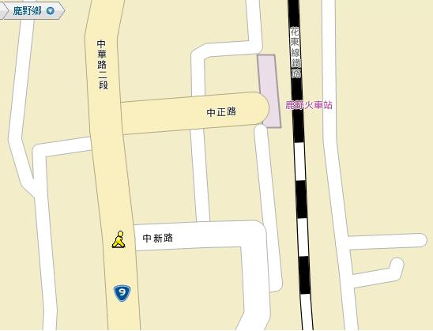

在這物欲橫流，人心迷漫的時代，每人過著緊張、焦慮不安的生 活，內心深處的不滿足，難以紓解;藉以禪修功能，促使心地寧靜 ，得以開啟自心的能量，生命的意義，人生的價值，生活的昇華及 身心的淨化。基於台灣東部這塊淨土，景致怡人，風景秀麗，本寺住持傳妙法師發起(十日禪)修持，可說因緣殊勝，機會難逢，更難能可貴的是聘請到國際級禪師--緬甸 悉臘尊者親自教導。
3月12~21日(農曆二月初八至二月十七日); (西元 2011年)
1994 年受俱足戒，1997 年跟隨帕奧禪師修學。之後，受聘在帕奧禪林多處分支機構指導禪修。2008 年以來多次來台教授禪法。主要使用語言有緬語、巴利語、英語。
成功大學研究生。
止禪(四禪八定)與觀禪(毘婆舍那)。由出入息念(觀呼吸)、四大界差別觀。(禪師個別教導，個別小參。)
◎持午(晚上不提供膳食)。
地址：台東縣鹿野鄉鹿野村中新路 46 巷 3 號
電話：(089)551631; 550886
釋傳妙0937-397-236/ 許師姐0972-000-374; E-Mail：metta222(＠)gmail.com
何居士0988-197-800
李師姐089-361-055 傳真: 089-324-915
1. 交通:鐵路:台東鹿野站下車步行6 分鐘
2. 公路:鹿野站牌下車步行6 分鐘。

別再猶豫了！機會難逢！不僅可以體驗東部勝境之美，也可藉此舒放
身心，調節生活壓力，別讓機會就此消失，等待是不會有結果的！